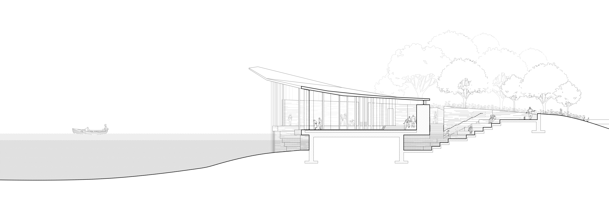
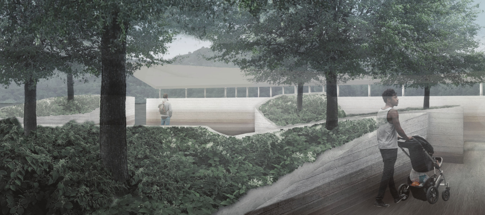
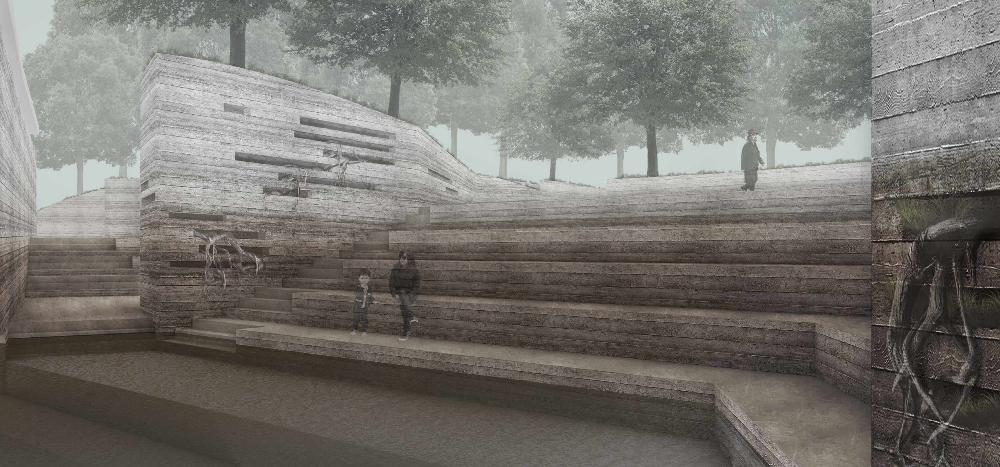
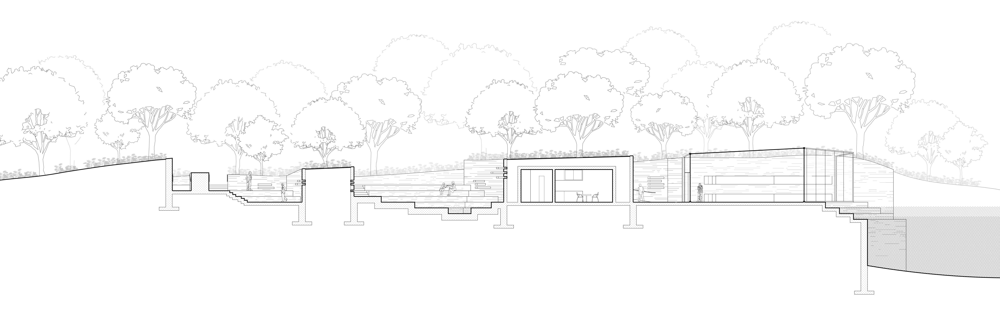

6-mile Island; Weathering Infrastructure (2020)
Six-mile island, an island on the Allegheny River, is extremely prone to flooding. Its ecosystem and topography elegantly reflect and rely on the river's natural cycles of flood and regrowth.

The museum of weather project seeks to amplify visitors’ understanding of the Allegheny’s variable water level. Through the shaping of space of board-form concrete, the terracing of program, and the exposure of subsurface plants, the museum formally represents its objective.


Visitors are invited drop below the island’s ground level on entry, reflect on water’s role in shaping the process, and observe the current’s effect on debris floating through the water.

As the structure ages, dirt and grime will collect on the cavernous walls and the museum will take a position on its aging material and structure.
